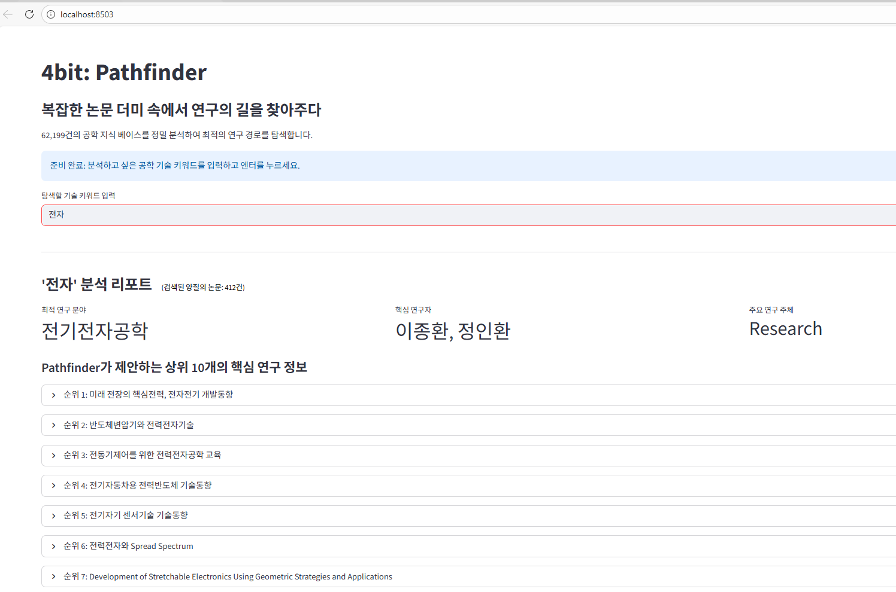
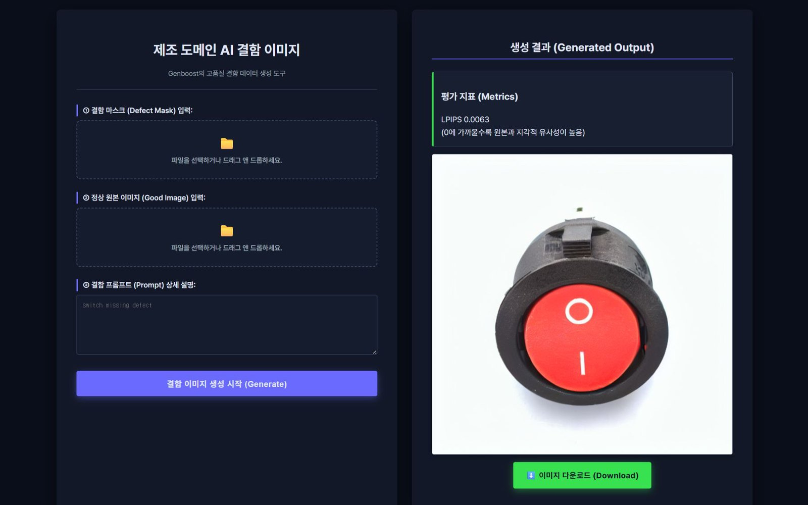
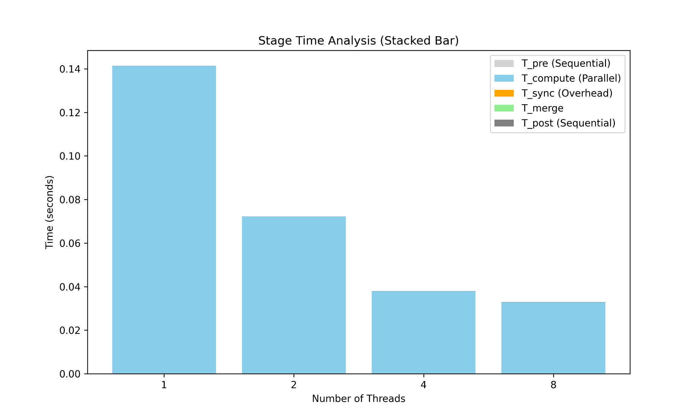
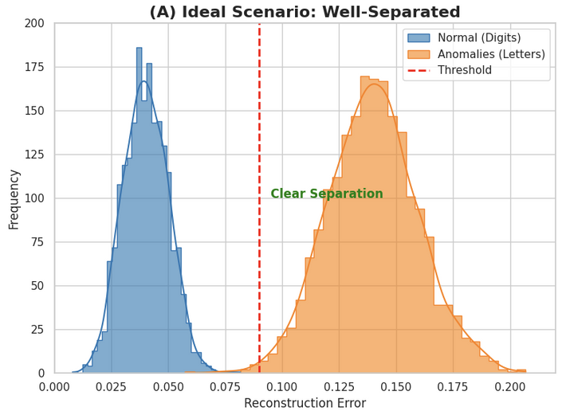
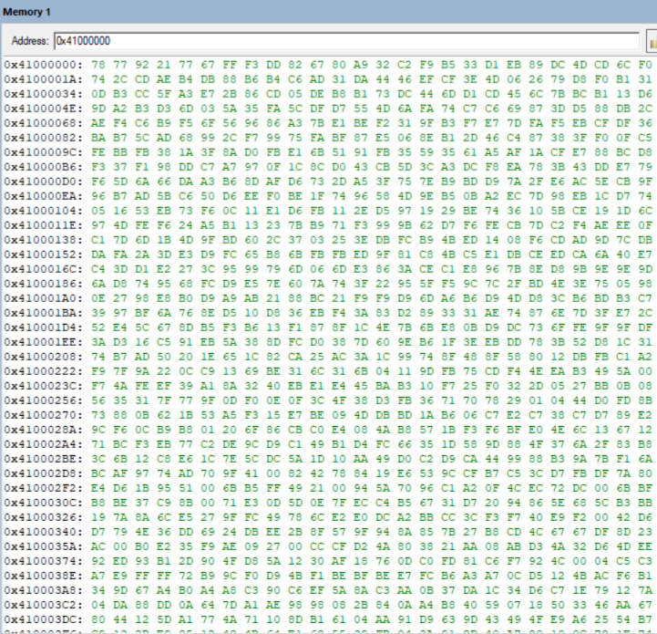
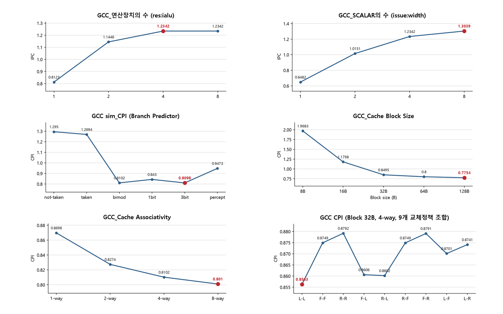
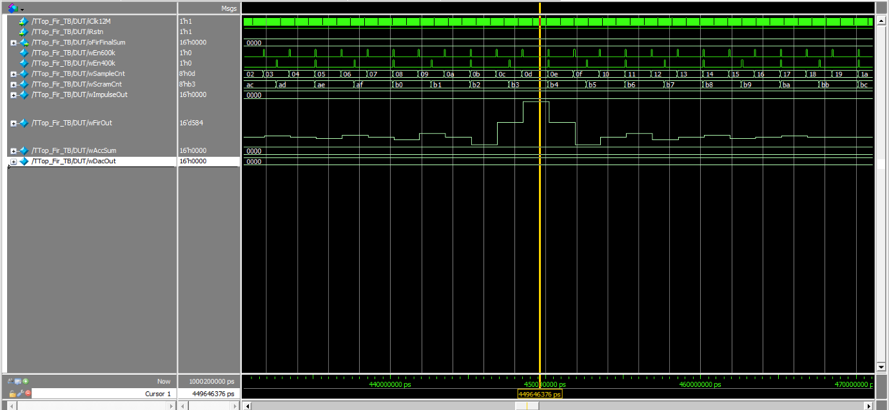

01 / 08
의미론적 검색 엔진 모델 구축 — 4bit Pathfinder
데이터톤 우수상
62,199건 논문 데이터의 키워드 결측치를 복구해, FAISS 기반 연구자·기관 추천 엔진을 만들었습니다.

Yu Jiwon — 데이터 파이프라인 · 시스템 최적화 엔지니어
검색 엔진, 병렬 처리 구조, 생성형 AI, 임베디드, 반도체 리소그래피까지. 직접 구현하고 수치로 검증한 결과를 원본 보고서와 함께 정리했습니다.
서로 다른 레이어의 프로젝트를 직접 설계하고 구현해왔습니다. 왜 이 방식을 선택했는가와 결과를 어떻게 수치로 증명할 수 있는가를 가장 중요하게 생각합니다.
데이터톤 우수상
62,199건 논문 데이터의 키워드 결측치를 복구해, FAISS 기반 연구자·기관 추천 엔진을 만들었습니다.

과기정통부 주최 장려상
Stable Diffusion·ControlNet으로 제조 결함 이미지를 생성해, 학습 데이터 부족 문제를 해결했습니다.

4-worker 효율 92.5~94.0%
5가지 병렬 처리 구조를 직접 구현해, 워커 수와 실행 효율의 관계를 수치로 입증했습니다.

재구성 오차율 최소화
심각한 과적합의 원인을 하이퍼파라미터별로 실험해, Test Accuracy를 81%까지 끌어올렸습니다.


설계 명세 동작 검증
SimpleScalar로 프로세서·캐시 구성을 바꿔가며, 4개 벤치마크로 성능 변화를 정량 분석했습니다.

Waveform으로 동작 검증
21-tap 재구성형 FIR 필터를 Verilog로 설계해, 계수 변경 중 파형이 깨지는 문제를 해결했습니다.

Corner Rounding 24.39 → 19.1nm
default·split recipe로 OPC를 수행해, Corner Rounding을 24.39nm에서 19.1nm로 줄였습니다.

프로젝트와 보고서에 대해 궁금한 점이 있으면 편하게 연락 주세요.
gamedh823@gmail.com
62,199건의 공학 분야 논문 메타데이터를 다뤘는데, 트렌드 분석에 가장 중요한 키워드(KYWD) 필드가 26.38%나 비어 있었습니다.
이 상태로는 정확한 연구 동향 분석이 불가능했고, 설령 키워드가 있어도 사용자가 입력한 검색어와 논문 제목의 단어가 정확히 일치하지 않으면 관련 논문을 못 찾는 문제도 있었습니다.
데이터 전처리부터 모델링 및 최적화까지 이 파트를 맡았습니다.
결측치를 그냥 버리지 않고, 논문 제목에서 단어를 추출해 채우는 방식을 택했습니다. 긴 단어부터 우선 매칭되도록 정렬한 master_vocab 사전을 만들고, 동의어를 하나로 묶는 매핑과 140여 개 불용어 사전으로 노이즈를 걸러 제목에서 키워드를 역추출했습니다.
논문 제목을 ko-sroberta-multitask로 임베딩하고 FAISS 인덱스에 넣어, 62,199건 전체를 실시간으로 유사도 검색할 수 있게 만들었습니다.
Streamlit으로 “4bit Pathfinder”라는 대화형 웹 UI를 만들어, 키워드를 입력하면 관련 연구 분야·핵심 연구자·주요 기관을 바로 보여주도록 구성했습니다.
키워드 결측치 26.38%를 제목 기반 역추출로 복구했더니 77.39%가 복구되어 최종 데이터 충전율 94.0%를 달성했습니다.
검색 결과에는 “소개”, “안내”, “공지” 같은 연구와 무관한 행정성 노이즈가 섞여 들어오는 문제도 있었는데, 이런 단어가 포함된 항목을 걸러내는 필터링 로직을 추가해서 순수 연구물 위주로 결과가 나오도록 정리했습니다.
결과적으로 데이터톤에서 우수상을 받았습니다.
제조 현장에서 결함 이미지를 학습 데이터로 쓰려면 실제 불량이 날 때까지 기다려야 했습니다.
불량률이 낮을수록 데이터는 더 안 모이는데, 검사 모델은 그 데이터로 학습해야 하는 딜레마였습니다.
그래서 실제 결함과 비슷한 이미지를 인위적으로 만들어내는 쪽으로 방향을 잡았습니다.
AI 모델 개발 파트를 맡았고, 요구사항 정의서·서비스 흐름도·화면 설계서·알고리즘 명세서·ERD까지 설계 문서 작업도 같이 했습니다.
Stable Diffusion에 ControlNet과 LoRA를 얹어서 제조 결함 이미지를 생성하는 모델을 만들었습니다.
이걸 Django 백엔드, AWS S3/RDS와 연동해서 생성된 이미지가 바로 서비스에 반영되도록 구성했습니다.
AI 모델이 뱉어내는 결과물이 실제 응용 소프트웨어 쪽 요구사항과 맞지 않아 연동이 꼬였습니다.
서비스 흐름도와 알고리즘 명세서를 기준으로 인터페이스를 다시 정의해서 풀었습니다.
이 과정을 거쳐 장려상을 받았습니다.
워커 수를 늘리면 그만큼 빨라질 거라고 흔히 가정하지만, 실제로 그런지 직접 측정해본 경우는 많지 않습니다.
코어를 다 쓰는 것(활용률)과 실제로 빨리 끝나는 것(실행시간 단축)이 같은 말인지도 확실하지 않았습니다.
차량 추종 위험도를 Monte Carlo로 계산하는 CPU-bound 워크로드를 설계하고, Sequential/Thread/Process/Hybrid/Pipeline 5가지 구조를 팀원들과 구현했습니다.
그중 초기 시스템 설계 배경과 병렬화 모델의 타당성을 정리하는 부분, 중간 발표를 맡았고, trial 단위 deterministic seed 계산과 checksum 검증 체계를 설계했습니다.
실험은 Linux 환경에서 1.2억 trial × 50 step 조건으로 1/2/4/8 worker 각각 직접 돌렸고, 반복 실험 수치를 대조·검수한 뒤 Speedup·Efficiency·CPU 활용률 그래프를 직접 그렸습니다.
CPU-bound Monte Carlo 워크로드를 C로 구현 (1.2억 trial 규모)
POSIX pthread, Process/IPC를 이용해 5가지 처리 구조(Sequential, Thread, Process, Hybrid, Pipeline)를 각각 구현
Strong Scaling 기준으로 worker 수를 늘려가며 실행 시간과 자원 사용률을 측정
4-worker에서는 자원 포화도가 높게 나왔는데, 8-worker로 올리니 오히려 효율이 떨어졌습니다.
처음엔 측정 오류인가 싶어서 반복 실험으로 수치를 다시 대조·검수했는데, 같은 패턴이 재현됐습니다.
즉 코어를 더 쓴다고 실행시간이 그만큼 줄어드는 게 아니라는 걸 숫자로 확인한 셈입니다.
1.2억 trial 규모의 스케일링 측정을 완료했고, 4-worker 환경에서 92.5~94.0% 수준의 효율을 확인했습니다.
Baseline 모델(784-596-408-220-32 구조, GELU, Adam, lr 5e-3, epoch 400)을 그대로 돌렸더니 Validation 정확도는 94.5%인데 Test 정확도는 67.86%로 폭락하는 심각한 과적합이 나타났습니다.
epoch을 늘릴수록 모델이 이상 데이터까지 복원해버려서, 정상/이상을 가르는 threshold가 지나치게 낮아진 게 원인이었습니다.
Layer/Node 구조, Epoch, Batch Size·Learning Rate, Optimizer·Activation Function, Loss Function을 하나씩 바꿔가며 비교하는 하이퍼파라미터 최적화 실험을 진행했습니다.
Layer/Node: 784-596-408-220-32에서 784-600-512-256-128-64-32로 층을 늘려 Latent Space 분리를 더 뚜렷하게 만들었습니다.
Epoch: 400에서 60으로 줄여 과적합을 억제했습니다.
Batch Size·Learning Rate: lr 0.001/0.005 × batch 64/128/256 조합을 전부 비교했습니다.
Optimizer·Activation: Adam+SiLU, AdamW+GELU, NAdam+ReLU 세 조합을 비교했습니다.
Loss Function: MSE, L1, HuberLoss, BCELoss를 비교했습니다.
가장 인상적이었던 건 Learning Rate 0.005에 batch 128을 같이 쓰니 Accuracy가 0.51까지 붕괴한 실험이었습니다.
학습률과 배치가 둘 다 크면 gradient 분산이 줄면서 최소점 주변을 지나쳐 진동·발산한다는 걸 수치로 확인했습니다.
반대로 lr 0.001은 batch 크기가 바뀌어도 안정적이었습니다.
최종적으로는 NAdam+ReLU 조합이 정상·이상 데이터의 재구성 오차 분리도가 가장 좋았고, Loss Function은 MSE가 가장 안정적으로 수렴했습니다.
최종 모델(784-600-512-256-128-64-32, ReLU, NAdam, lr 1e-3, batch 64, epoch 60, MSE)로 Test Accuracy 0.8116, Precision 0.8133, Recall 0.8090, F1-Score 0.8111을 달성했습니다.
Keil MDK 환경에서 32비트 RGBA 이미지를 어셈블리 레벨에서 직접 처리해야 하는 과제였습니다.
고수준 언어의 도움 없이 레지스터 단위로 픽셀을 다뤄야 했습니다.
Subproject#2인 색 반전(negative) 연산을 맡아서, R/G/B 채널 값을 각각 255에서 빼는 어셈블리 함수를 직접 짰습니다.
32비트 RGBA 픽셀을 순회하며 R, G, B 각 채널을 255에서 빼는 색 반전 연산을 ARM 어셈블리로 구현
원본의 순차 접근 방식과, 채널별로 독립적으로 후처리하는 메모리 리로케이션(Planner) 방식을 비교해 구조를 설계
Keil MDK에서 메모리 맵을 직접 분석
개발 중에 링커 진입점이 중복 충돌하는 L6235E 에러가 났습니다.
assem.s 파일 안에서 ENTRY와 EXPORT를 재정의해서 진입점을 다시 잡는 방식으로 해결했습니다.
Subproject#2 구현을 완료했고, 메모리 리로케이션 분석 결과를 보고서로 정리했습니다.
“연산 장치를 늘리면 항상 빨라진다”, “캐시를 늘리면 항상 좋아진다”는 가정이 실제로 어느 지점까지 맞고 어디서 깨지는지, 직접 시뮬레이션해서 확인해본 적은 없었습니다.
하드웨어를 직접 제작하지 않고도 이런 설계 옵션들의 효과를 비교할 방법이 필요했습니다.
팀원 4명(김주하, 유지원, 이재민, 최은지)이 함께 SimpleScalar 시뮬레이터로 프로세서 구성(연산장치 수, superscalar width, branch predictor)과 캐시 구성(block size, associativity, replacement policy)을 바꿔가며 실험을 설계했습니다.
GCC·ANAGRAM·COMPRESS95·GO 4개 벤치마크에 대해 시뮬레이션을 돌리고 결과를 분석했습니다.
res:ialu(정수 ALU 개수), issue:width(스칼라 수), bpred(분기 예측 방식)를 각각 바꿔가며 IPC/CPI 변화를 측정했습니다.
cache block size(8B~128B), associativity(1~8-way), replacement policy(LRU/FIFO/RANDOM 9가지 조합)를 바꿔가며 CPI·AMAT 변화를 측정했습니다.
개별 파라미터의 최적값을 먼저 찾은 뒤, 이를 조합했을 때 성능이 실제로 더 좋아지는지 검증하는 방식으로 최적 캐시 구성을 탐색했습니다.
연산 장치 수를 4개에서 8개로 늘려도 IPC가 그대로인 현상을 발견했습니다.
issue:width(한 사이클에 실행 단계로 넘길 수 있는 명령어 수)가 4로 고정되어 있어, 늘어난 연산 장치가 실제로는 활용되지 못하고 있었습니다.
캐시 쪽에서는 COMPRESS95와 GO에서 각각 측정 오류·워크로드 특성 문제를 발견해 재검증했습니다.
그 결과 애플리케이션마다 최적 조합이 다르다는 것을 확인했습니다 — 예를 들어 COMPRESS95는 다른 벤치마크와 달리 64B block size가 최적이었습니다.
4개 벤치마크 모두에서 개별 파라미터를 최적화한 조합이 각 파라미터를 단독으로 최적화했을 때보다 낮은 CPI를 기록해, 파라미터 간 상호작용을 수치로 입증했습니다.
고정 계수(fixed-coefficient) FIR 필터는 설계 시점에 정해진 필터 특성 하나만 제공합니다. 저역통과·고역통과·대역통과 등 특성이 바뀔 때마다 하드웨어를 새로 설계해야 하는 게 비효율적이었습니다.
기본 Verilog 코드 작성, Waveform 확인, 보고서 작성을 맡았습니다. (팀장·발표는 한승조, Waveform 확인·발표는 최승완, Testbench 코드 작성은 정의찬이 각각 분담)
21-tap Multiply-Accumulate(MAC) 구조의 FIR 필터를 Verilog로 설계
필터 계수(coefficient)를 4개의 SRAM(SpSram10x16) 모듈에 저장해, 계수를 바꾸는 것만으로 필터 특성을 재구성할 수 있는 구조로 설계
Controller(FSM)로 “계수 업데이트 단계”와 “필터 연산 단계”를 분리 제어
Quartus·QuestaSim으로 시뮬레이션 및 Impulse Response Waveform 분석
FIR 연산이 진행되는 도중 계수를 바꾸면 tap마다 서로 다른 계수가 섞여서 waveform이 고르게 안 나오는 문제가 있었습니다.
계수 업데이트 구간과 필터 연산 구간을 완전히 분리된 타이밍으로 설계해서 해결했습니다 — 필터 연산 단계에서는 SRAM을 Read-only로, 계수 업데이트 단계에서는 Write-only로 동작하도록 FSM에서 통제했습니다.
Impulse Response Waveform 검증 결과, 계수가 정상적으로 로딩되고 FIR 구조에 오류가 없음을 확인했습니다.
출력 파형은 Kaiser window 기반 계수의 대칭 구조(Linear Phase FIR)를 그대로 보여주었습니다.
빛의 회절 때문에 마스크 패턴을 그대로 인쇄하면 모서리가 둥글어지고 선폭이 줄어드는 왜곡이 생깁니다. OPC는 이를 미리 보정하는 기술인데, Recipe 파라미터에 따라 보정 결과가 달라집니다.
어떤 파라미터가 어떤 품질 지표를 바꾸는지 직접 확인하는 것이 과제의 목표였습니다.
6인 팀에서 실험을 담당했습니다. default / split 두 가지 recipe를 설정해 OPC를 수행하고, Contour simulation 결과를 비교하는 실험을 진행했습니다.
Feature Classification: Min_feature 65nm → 50nm
Dissection: nominal_seg_len 50 → 40, num_run_segs 5 → 6 등으로 Edge를 더 세밀하게 분할
Retargeting: vert_control 1.0 → 0.8로 Corner 부근 과보정 방지
Hierman으로 Template 생성 후 Corexec으로 Recipe를 적용해 OPC 수행, Contour simulation 후 CD 측정
파라미터마다 영향을 주는 영역이 달라, 변경 항목별로 예상 결과를 먼저 세운 뒤 실제 측정값과 대조했습니다.
두 recipe의 Contour를 같은 위치에서 측정해 Segment 세분화 → Corner·Edge 보정 정밀도 향상이라는 가설을 확인했습니다.
Split recipe 적용으로 Corner Rounding 24.39nm → 19.1nm, Mask–Contour CD 차이 5nm → 3.5nm, Contour narrowing 1.5nm → 1nm로 개선됐고 Line Edge Roughness도 감소했습니다.